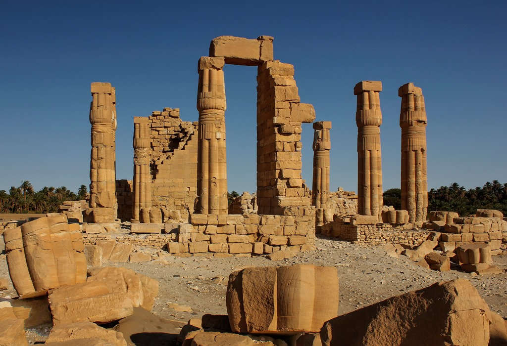

Soleb Temple Inscription

- Find Name
- Soleb Temple Inscription
- Description
- The Soleb Temple Inscription is a name-ring list carved on column bases in the Temple of Amenhotep III at Soleb in northern Sudan, built c. 1390-1350 BC and excavated by Michela Schiff Giorgini's expedition between 1957 and 1977; the list was published and discussed by Raphael Giveon in 1964. Among six Shasu (tent-dwelling herder) lands named - including Seir - one ring reads 't3 sh3sw yhw,' 'the land of the Shasu of YHW.' The list was later copied at Amarah West under Ramesses II (c. 1279-1213 BC), and the Soleb columns remain in place, with Amarah West blocks partly in place and partly in the British Museum.
- Historical Period
- New Kingdom, 18th Dynasty, c. 1390-1350 BC
- Evidence Class
- Contextual
- Interpretations
- Soleb preserves the oldest plausible occurrence of the divine name YHW outside the Bible, tied to desert nomads in the region of Seir and Edom - matching the Bible's own memory that YHWH 'came from Seir' and 'shone forth from Mount Paran' (Deuteronomy 33:2; Judges 5:4-5). Two cautions are essential: the inscription does not mention Israel, and scholars debate whether YHW here is a god, a place, or a clan name, so it cannot be claimed as proof of the Exodus or of Israel's God by that name in this period. It shows the name was known among southern desert peoples in the Late Bronze Age, which fits the biblical wilderness tradition without confirming it.
- Alternative Names
- Shasu of YHW Inscription; Land of the Shasu of Yahweh
- Related Places
- Related Books
- Related Events
- Related People
- Scripture Illuminated
- Biblical Significance
- Soleb gives the earliest extra-biblical trace of the name Yahweh, among desert peoples south of Canaan in the very period the Bible places the wilderness wanderings.
- Artifact Date
- c. 1390-1350 BC (copied c. 1279-1213 BC at Amarah West)
- Current Location
- In situ, Soleb, Sudan; Amarah West blocks partly in place and partly in the British Museum
- Date Discovered
- 1957-1977 (excavation); published 1964
- Discovery Location
- Soleb, northern Sudan
- Timeline Era
- Exodus and Wilderness
Awaiting Review Not yet checked against scholarly sources. Treat its claims as provisional until this entry is reviewed. About verification
Sources: https://hebrewexplorer.com/archaeology/soleb-shasu-of-yhw/
https://en.wikipedia.org/wiki/Yahweh
https://en.wikipedia.org/wiki/Yahweh
Last reviewed: not yet reviewed